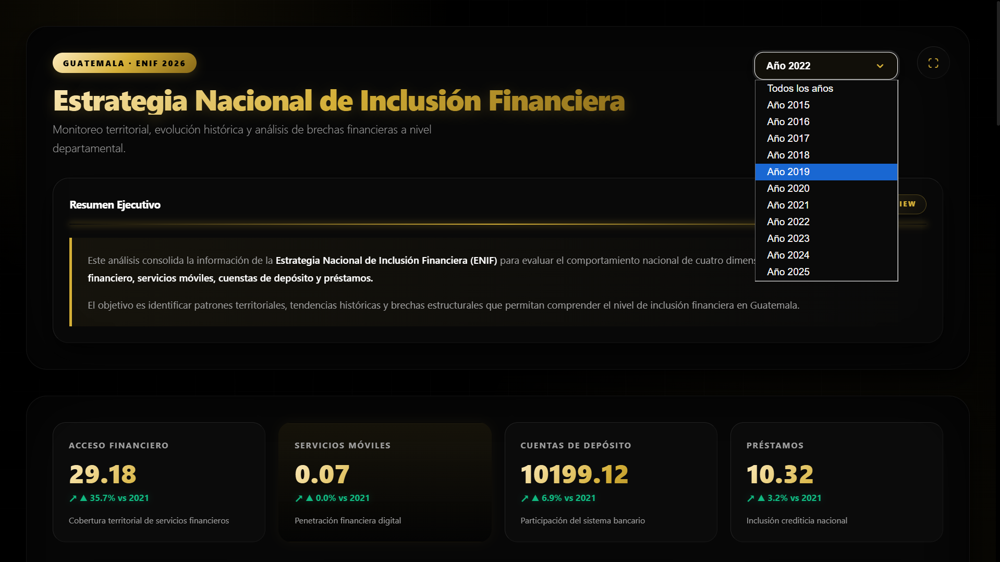
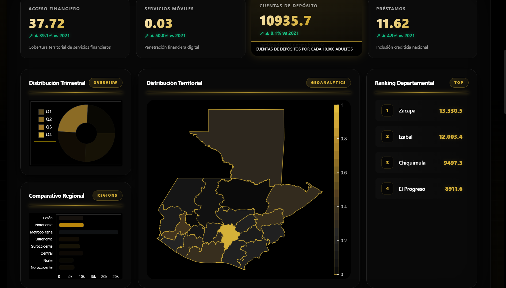
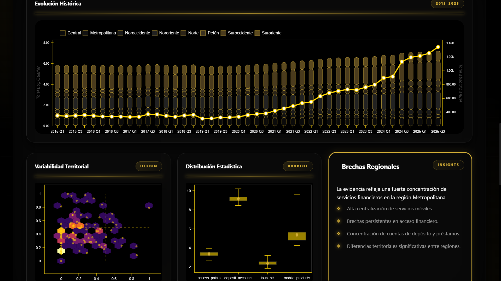
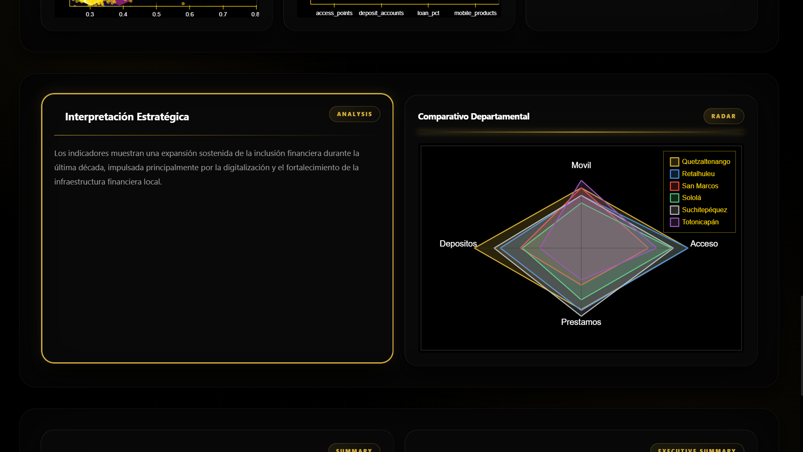
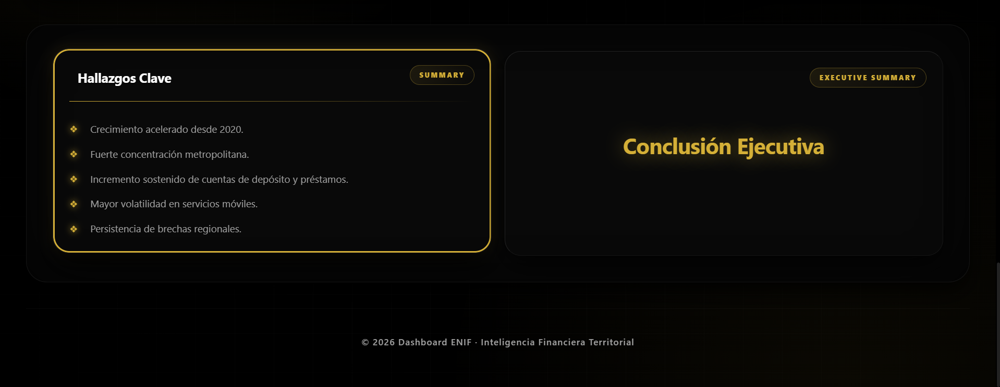

PORTAFOLIO DE DASHBOARDS

Transformando datos en decisiones estratégicas
Soy Javier Barillas, economista especializado en análisis de datos, visualización y desarrollo de dashboards. Combino estadística, programación y diseño para transformar información compleja en herramientas que apoyan la toma de decisiones. Manejo SQL, Python, HTML, CSS, JavaScript, Excel y Power BI, integrando análisis económico con comunicación visual efectiva. Actualmente me enfoco en analítica descriptiva, con el objetivo de avanzar hacia modelos predictivos y soluciones basadas en datos.
Cómo fueron construidos estos dashboards
Cada proyecto fue desarrollado siguiendo un proceso completo de análisis de datos que abarca desde la obtención y limpieza de información hasta la construcción de visualizaciones interactivas orientadas a la toma de decisiones.
Obtención de Datos
Utilización de bases de datos públicas, repositorios académicos y conjuntos de datos obtenidos en Kaggle especializados para cada dominio analítico.
Procesamiento
Limpieza, transformación y validación mediante Python, SQL y herramientas de análisis estadístico.
Modelado
Construcción de indicadores, métricas de negocio, variables derivadas y modelos analíticos.
Visualización
Desarrollo de dashboards interactivos utilizando HTML, CSS, JavaScript y bibliotecas de visualización.
Indicadores
KPIs y Gráficos
Series Históricas
25 años
Actualización
Mensual
Visualización
Interactiva
Indicadores
KPIs y Gráficos
Mercado
Retail Local
Actualización
Diaria
Visualización
Interactiva
Indicadores
KPIs y Gráficos
Objetivo
Dinero Falso
Variable
Monetaria
Visualización
Interactiva
Indicadores
KPIs y Gráficos
Muestra
10,000 Envíos
Actualización
Por Envío
Visualización
Prescriptiva
Inclusión Financiera en Guatemala
Plataforma analítica integral diseñada para explorar indicadores clave de acceso, uso y calidad de servicios financieros. Un solo dashboard, múltiples perspectivas.
Nota: Visualización estática (captura de pantalla) por restricciones técnicas del entorno. El dashboard interactivo es funcional en el entorno de desarrollo.

Exploración Multidimensional
En lugar de vistas estáticas, la herramienta segmenta los datos en módulos interactivos. Al aislar variables como el acceso, servicios, cuentas y prestamos, permite un cruce sociodemográfico preciso para revelar brechas estructurales.



